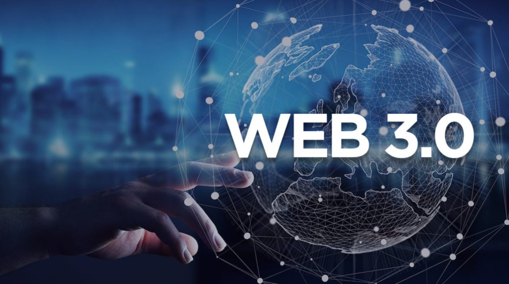

La Web 3.0

La Web 3.0 es una evolución de la World Wide Web que ha sido discutida y conceptualizada en
la última década. Aunque no hay una definición única y clara, la Web 3.0 se ha asociado con
varios conceptos clave que la distinguen de las generaciones anteriores de la web.
Interconexión de Datos: La Web 3.0 se centra en la
interconexión de datos de manera más
inteligente y significativa.
Inteligencia Artificial y Machine Learning: La Web 3.0
integra de manera más amplia la
inteligencia artificial y el aprendizaje automático para proporcionar servicios más
personalizados y adaptativos.
Tecnologías Descentralizadas y Blockchain: La
descentralización es un principio clave de la Web 3.0.
Realidad Virtual y Aumentada: La Web 3.0 busca integrar de
manera más fluida la realidad virtual y aumentada, brindando experiencias más inmersivas y
enriquecedoras.
Economía Tokenizada: La Web 3.0 también se asocia con la
tokenización de activos y servicios.
Privacidad y Seguridad: La Web 3.0 se esfuerza por abordar
las preocupaciones de privacidad y seguridad de manera más efectiva.
En resumen, la Web 3.0 representa una visión de la web más inteligente, interconectada y
descentralizada, aprovechando tecnologías emergentes como la inteligencia artificial, la
blockchain y la realidad virtual para ofrecer experiencias en línea más avanzadas y
centradas en el usuario.